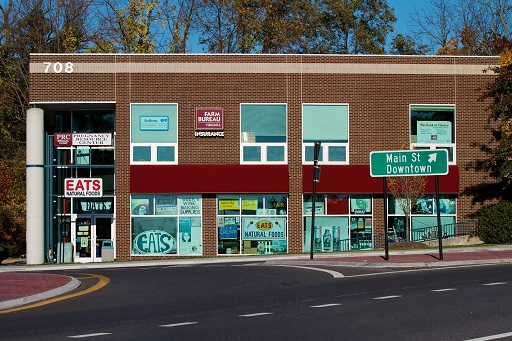

Doin' it naturally since 1974!
Welcome to the official website of Eats, Blacksburg's premier natural foods store. We offer a wide selection of organic, natural and gourmet foods, both local and from around the world.
Our products include: organic produce, gluten-free foods, cheeses, culinary herbs and spices, wine and beer brewing supplies, household products, supplements, and body care products.
Feel free to browse around on our website and we hope to see you in the store soon!